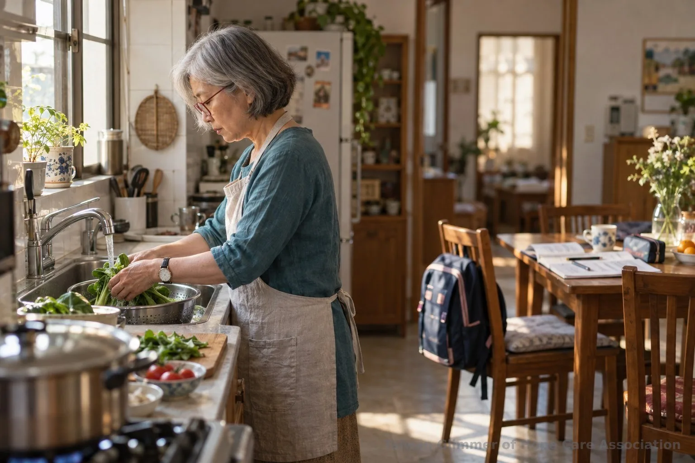
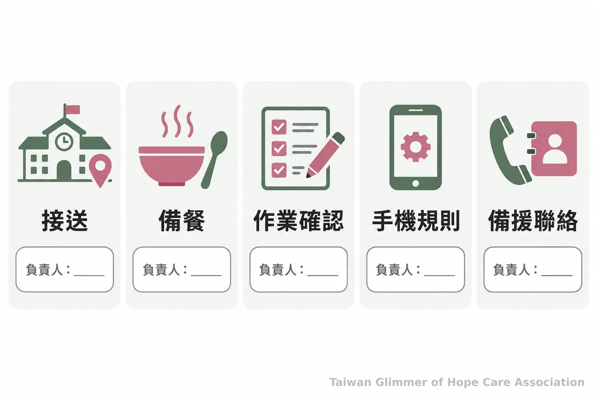
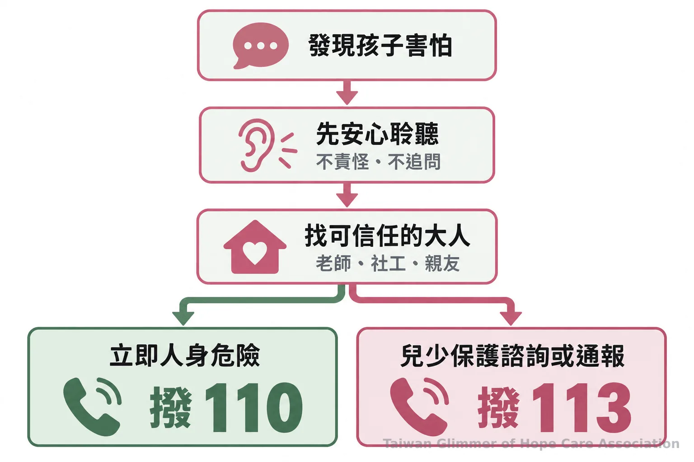

祖孫照顧怎麼少一點拉扯？家庭分工與支持資源整理
祖父母帶孫可能遇上體力負荷、教養差異與課業陪伴等日常難題。從照顧分工、家庭溝通到福利與保護求助，整理家人可以採取的做法。
【微光專欄｜好好當家長｜系列三之 4】
接孩子、備餐、提醒作業和回覆學校訊息，祖父母帶孫常由許多日常小事組成。家庭安排各有不同，隔代教養不代表誰做得不好。把照顧工作列出來，家人較能看見責任是否集中，並討論調整方式。

一、照顧工作怎麼盤點，才看得見長輩的負荷？
把接送、備餐、陪伴、家務和聯絡學校等工作列出來，標明負責人與時段，較容易看見哪些事情長期集中在同一位照顧者身上。盤點不是評分，而是找出可分擔的空間。
長輩可能忙完自己的事，又接著處理孩子三餐、作息與功課，休息或就醫時間也受影響。家人可記下一週的照顧事項，挑最吃力的一項分擔，例如固定接送、採買或輪流整理晚餐。
分工也要談備援：接送者臨時有事誰接手？學校聯絡時由誰回覆？先說清楚時間與聯絡方式，避免孩子替大人傳話。長輩身體或家庭作息改變時，也可重談安排。
二、教養觀念不同時，怎麼建立孩子聽得懂的共識？
先由大人選一兩項最重要的家中規則，私下談妥由誰提醒、遇到例外如何處理，再用一致的說法告訴孩子。不同看法先由大人溝通，不讓孩子替任何一方裁決。
睡覺時間、手機和作業安排都可能引起不同意見。可先談近期最常遇到的一項，例如睡前手機放置處，約好提醒方式與例外情況。父母說明原則，祖父母分享觀察，再討論出大人都能做到的安排。
課業不必全由祖父母負責。長輩可陪孩子確認作業、聽他說明困難，再告訴父母或導師。台灣微光希望關懷協會理事長林秀霞說：
「孩子是需要被鼓勵、被肯定的。」
肯定孩子願意嘗試和說出困難，能讓對話往下一步走。手機規則也要由大人共同遵守，並讓孩子知道遇到不舒服的網路內容可以找誰。

三、微光如何透過在地藝術陪伴接觸孩子？
微光與在地單位合作，每個據點每月安排一堂藝術陪伴課，從藝術作品引出情緒主題，讓孩子用自己的方式創作與分享。這是藝術陪伴活動，不以畫作判定孩子的處境。
微光以「在地小衛星」方式，與照顧脆弱家庭孩子的單位合作，目前有瑞芳愛鄰、板橋明穗和中壢宣愛三個據點，每月各有一堂藝術陪伴課。課程從藝術家作品或媒材帶出情緒主題，不設標準答案，也不比較畫得好不好。照片與紀錄，請見〈瑞芳愛鄰據點：跟著夏卡爾，飛進我的夢想花園〉。
四、照顧者需要支持時，可以向哪裡詢問？
教養與親子溝通問題可撥家庭教育諮詢專線 412-8185（手機加 02）；福利需求可洽所在地社會局處或撥 1957 詢問。資源內容和申請條件須依家庭情況向承辦單位確認。
教育部家庭教育諮詢管道可詢問親職教養、親子關係和家庭生活調適。家人可整理接送或手機規則等情境再詢問。若家中也照顧孕婦、兒童、慢性病患者或長期服藥者，可一併說明支持需求。
衛生福利部列出的 1957 福利諮詢專線每日早上 8 點至晚上 10 點服務，可詢問福利資訊及轉介。地方服務與申請條件，請向所在地社會局（處）確認。
五、孩子有安全疑慮時，家人可以怎麼求助？
若有立即人身安全危險，先撥 110；需要兒少保護諮詢或通報，可撥 113。一般民眾不必自行調查或判定責任，先讓孩子接觸可信任的大人與適當的專業協助。
聽見孩子表達害怕或看到令人擔心的情況時，先聆聽、不責備、不逼問，也不在網路散布孩子身分細節。立即危險撥 110；其他保護諮詢或通報可撥 113。衛福部說明，113 全年 24 小時服務；也可向老師、社工或可信任親友求助。

- 把接送、備餐、作業陪伴和休息時間列出來，選一項最需要分擔的工作與家人討論。
- 家中規則由大人先談妥，再用孩子聽得懂的一致說法說明。
- 教養諮詢可撥 412-8185（手機加 02）；福利需求可詢問所在地社會局處或 1957。
- 需要兒少保護諮詢或通報可撥 113；有立即人身安全危險時撥 110。
常見問題
Q1: 隔代教養代表父母不在孩子身邊嗎？
不一定。祖父母可能因工作或生活安排協助照顧，家庭分工各有不同，不能據此替家庭貼標籤。
Q2: 祖父母需要獨自負責孫子女的課業嗎？
不必由一位照顧者承擔全部教學。祖父母可陪孩子整理問題，再和父母或導師討論。
Q3: 家人教養想法不同時，可以先談什麼？
先選一項常遇到的規則，例如睡覺或手機使用，約好提醒者與例外處理方式。
Q4: 隔代家庭可以向哪裡詢問資源？
教養問題可撥 412-8185（手機加 02）；福利需求可詢問社會局處或 1957，服務依個別情況確認。
Q5: 孩子有安全疑慮時，應該打哪支電話？
保護諮詢或通報可撥 113；立即人身安全危險先撥 110。
今天可以先約家人談一次，列出最需要分擔的照顧工作，說清楚由誰接手。福利需求可詢問社會局處或 1957；兒少安全疑慮可撥 113，立即危險撥 110。
參考文獻
- 數位發展部（2026）。當面對婚姻問題時我該怎麼辦？辦理離婚要處理那些事情？我的E政府。https://www.gov.tw/News_Content_26_778871
- 衛生福利部（無日期）。諮詢服務專線。https://www.mohw.gov.tw/cp-23-135-1.html
- 衛生福利部保護服務司（無日期）。113保護專線介紹。https://dep.mohw.gov.tw/DOPs/cp-1183-6499-105.html
本文同步刊於 appi.news。